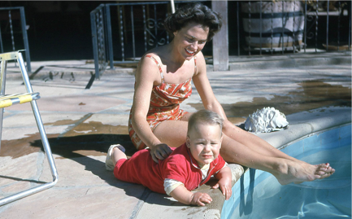
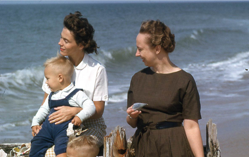
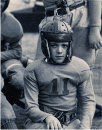
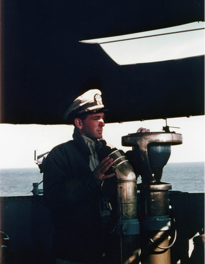
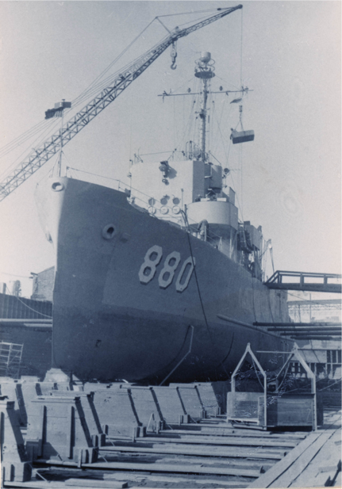
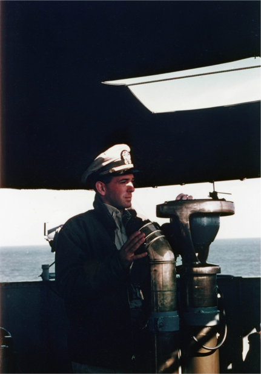
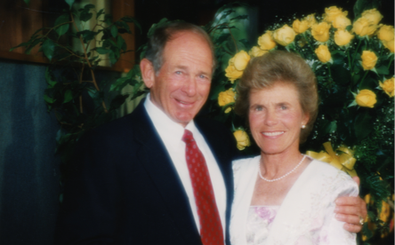
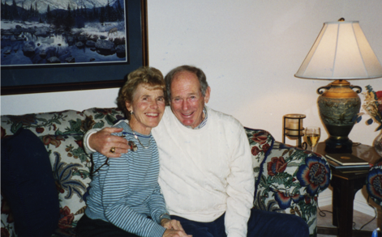
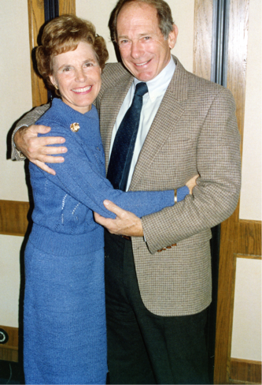

Jo
Bob
A TIMELINE OF LIFE
Timelines
For Jo & Bob Schaller
View Joannes
TIMELINE OF LIFE
-
College
University of Madison Wisconson
-
-
Teacher
High School Gym Class for __ Years
-
Mother
OF TWO BOYS AND ONE GIRL
-
 -
1959
CLINT IS BORN
Madison, Wisconsin
-
 -
1961
KURT IS BORN
Tuscon, Arizona
-
-
1962
OCEAN CITY, MARYLAND
-
1962-63
ARLINGTON, VIRGINIA
-
1964
JEANNIE IS BORN
Lafayette, Indiana
View Bobs
TIMELINE OF LIFE
-
1929
Bob Schaller
Born in Rochester, NY
April 27, 1929Grew up in
Rochester, New York BOB
-
1947
GRADUATED HIGH SCHOOL
Pelham High School, Pelham NY
-
-
1953
ATTENDED NAVAL ACADEMY
in Annapolis, MD Class of 1953
President of his class with Ross Perot -
-
Captain OF
A SHIP THAT SAILED LAKE SUPERIOR
 -
 -
Kodak
Regional Sales Director for __ Years
-
-
Father TO
TWO GIRLS - BORN IN ____
-
 -
Jo
Bob
TOGETHER SINCE 1985
View the Dual
TIMELINE OF LIFE
-
1985
JO & BOB MEET
On the tennis courts in Marco Island Florida
-
1990
JO & BOB MARRIED
On September 1st
 -
Time Well Spent
-
INCape Cod
-
Golfing
Sailing
Beaches
-
INKnoxville
-
Bridge
Tennis
Golfing
 